HW_ Week 3
Kate Y:
Clearly this is not exact, but my tweaking stamina wore out: https://editor.p5js.org/kateyourke/sketches/_fkii7_LN

Attempting to use math to change size and fill values: https://editor.p5js.org/kateyourke/sketches/ky0tDc63B

Adding movement, messing around with alpha values: https://editor.p5js.org/kateyourke/sketches/Eey0KfAgm

Lillian-Yvonne:
I recreated (in p5.js) some pages from N. H. Pritchard’s EECCHHOOEESS. It’s fairly simple stuff, but it aligns with my commitment to focus computational work on/towards Black writers and artists.

And for fun, I made a brand with a similar aesthetic.
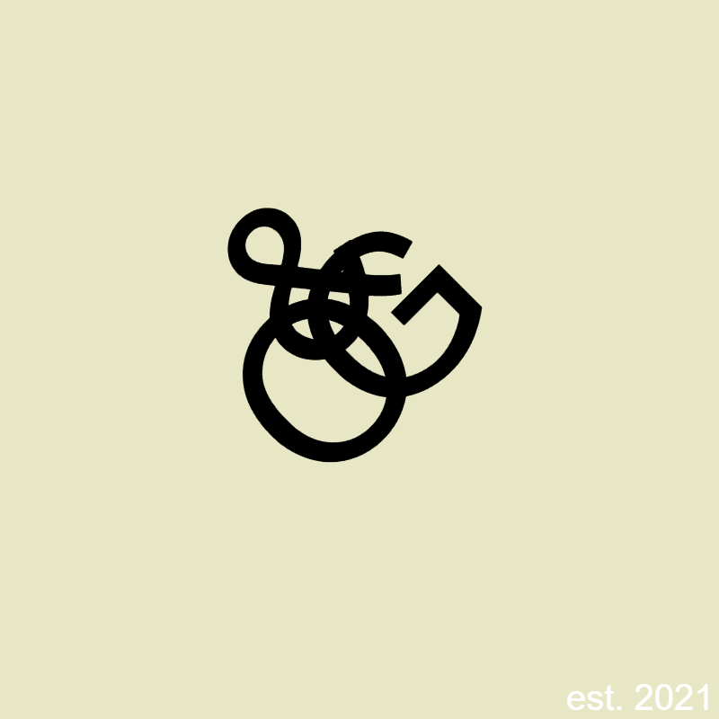
Matthis:
I made reproductions of 4 of John Maeda’s “12 o’clocks”, taking a few creative liberties along the way. My gif is looking a little weird and slow, but the link to the full window sketch should work better. Click anywhere on the screen to advance to the next clock.
Original:

Reproduction:
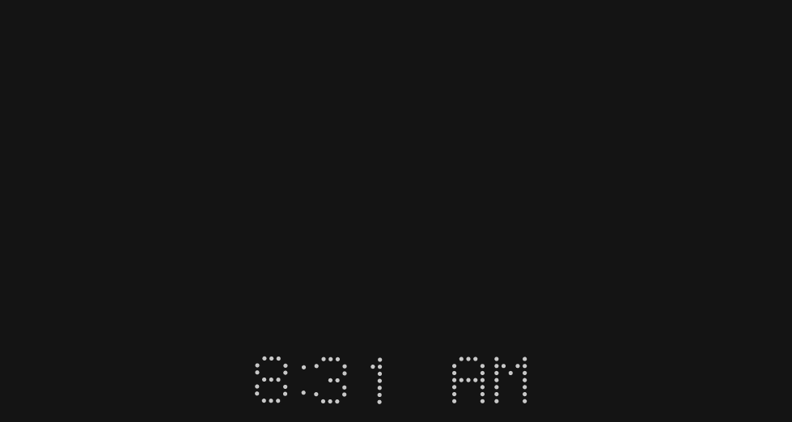
originals view in full window view with code
Jenna Murphy:
I first did a reproduction of Muriel Cooper’s Multiple Interaction book cover. I was then drawn to the Mary Ellen Solt poem Geranium. Works were created with p5.js. See pieces/links below:
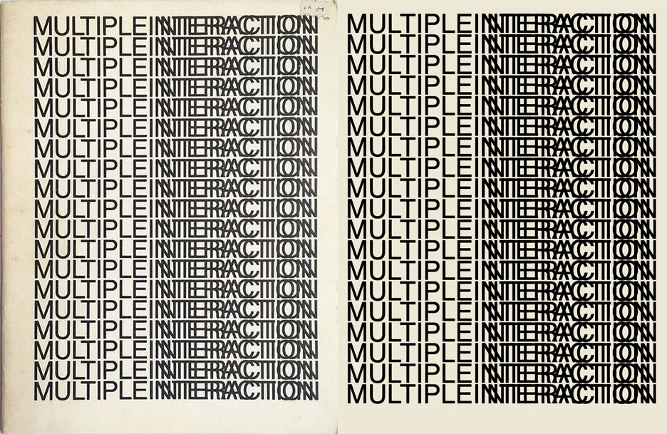
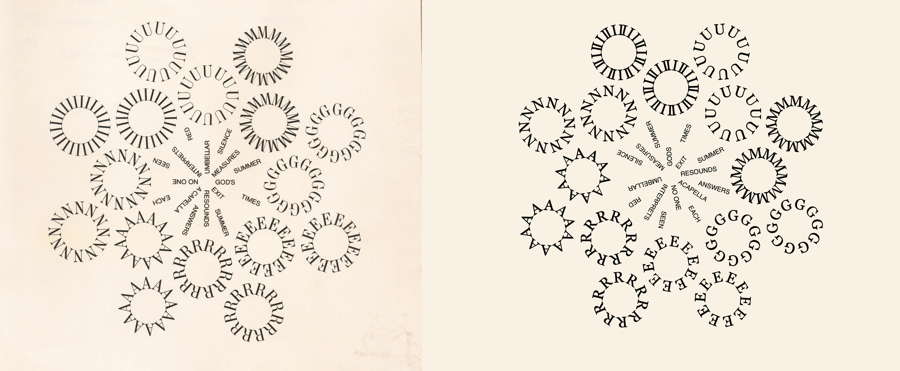
Luca:
My partner was sick this week and needed lots of love and support, so I aimed for something simple. I decided on Muriel Cooper’s cover for The Mathematical Sciences, which is beautiful and also has a nice optical illusion. Sometimes the top-right grid looks like it’s in front, and sometimes the bottom-left grid looks like it’s in front.
Original:

Recreation:

Heidi He:
I tried p5 this week for the first time and I recreated the simple but elegant MIT press logo from Muriel Cooper. I tried applying the style in texts and those are the derivation for “Heidi” and “SFPC” Link to my project
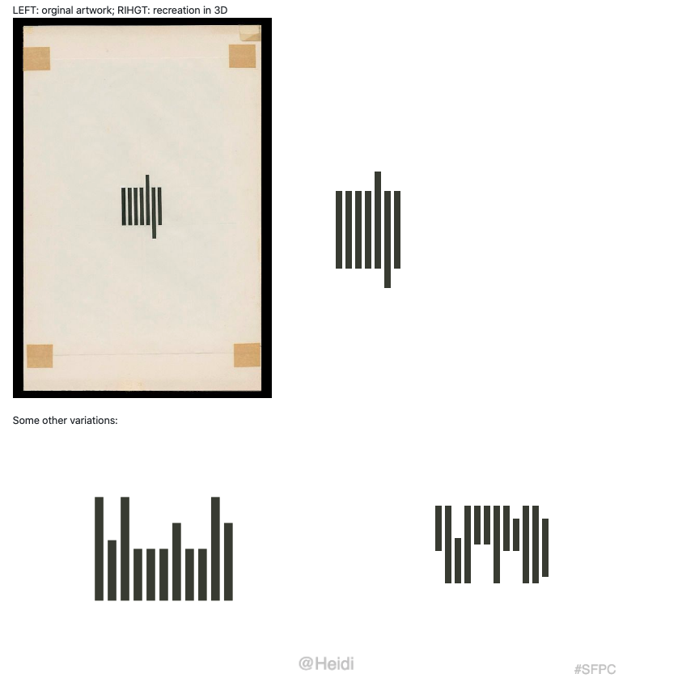
Sara M:
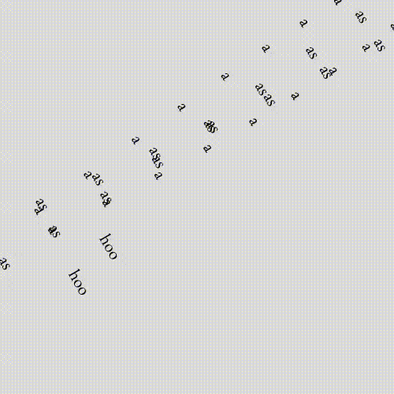
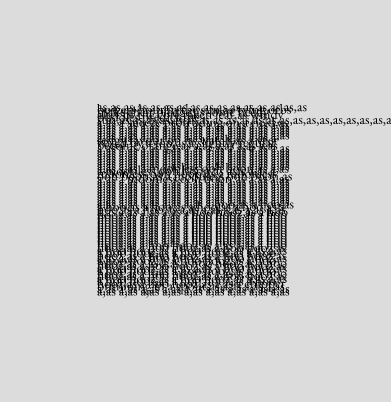

I recreated a poem from N. H. Pritchard’s Eecchhooeess. I played around with it and explored different ways to present a text. Links:
As a (txt file) - You can click on this and it will shuffle the phrases around. Contains the whole poem.
As a (close up) - Pictured in the gif. Contains a fragment of the poem.
As a (circular motion) - The poem moving around in space. Contains a fragment.
Anna R:
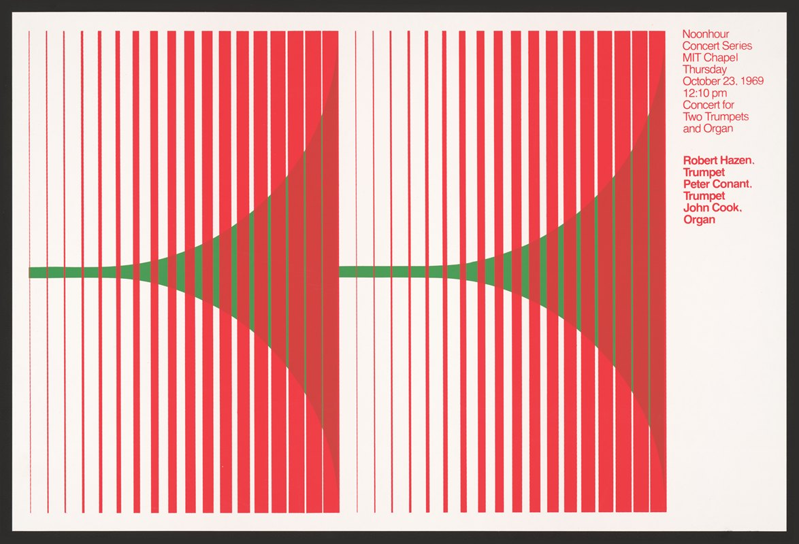
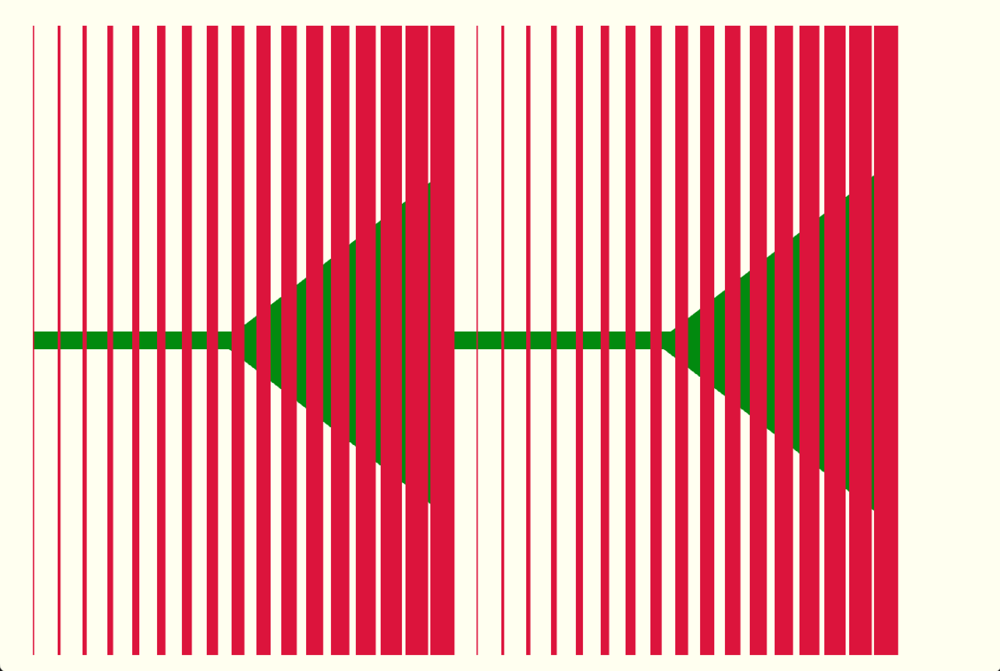
Hiroyuki:
Original:
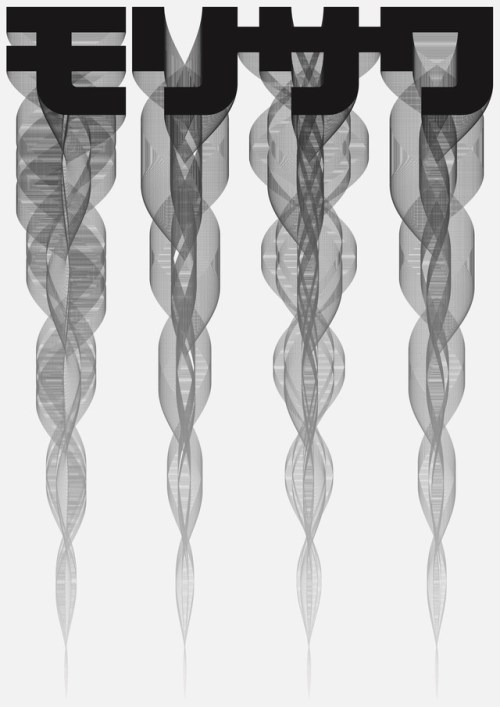
Recreation:

Michelle:

Recreation:


Joanne:
I tried to recreate Nedim Kufi’s Mind storming digital grid using p5.js. I experimented a bit more by using Alibata (indigenous Filipino alphabet). I've filled each box with Alibata which says "pa rin," a suffix often used to mean "remains" or "still", to convey that there are countless ways to digest the last 100 years, but the objective truth remains uncertain (and maybe unimportant).
Code, process: https://dazzling-record-094.notion.site/Computational-Typography-63fee88e656f47c8826f2827c658d8e4


Hermann Z:

https://observablehq.com/d/474a5d953d89508f
Maya C:
Recreating ON MODERNISM Cover design by Muriel Cooper for MIT Press, 1967

Sara K:
Nedim Kufi
This is a WIP still, while I succeeded in recreating the interface and centering the text. I couldn’t put the dataset and pull out different phrases yet… Process ;
Original:
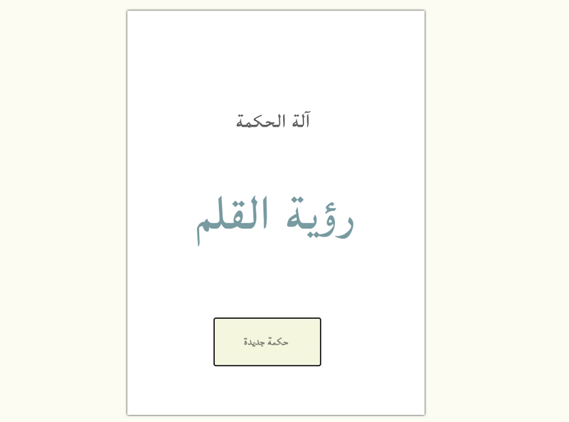
Recreation:

Mau:
Muriel Cooper - Teaching Children Thinking. code: https://editor.p5js.org/mau/sketches/yOVmSA0Ka [play with the slider :) ]
Original:

Recreation:
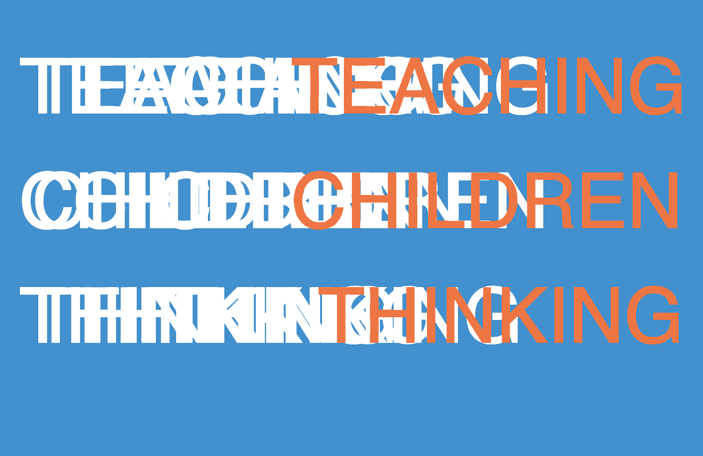
Ladan B:
John Maeda, Morisawa
Recreation:

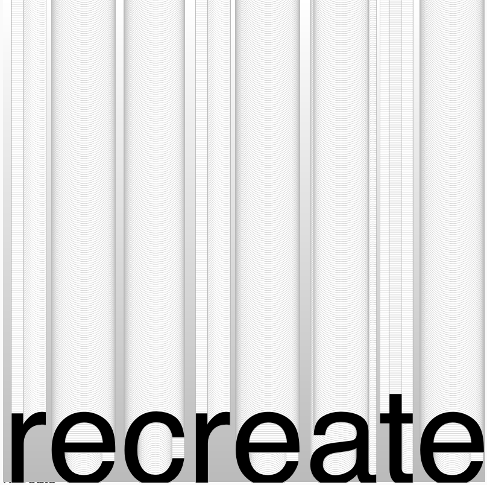
Yadira S:

Yadira - palabras de liberacion